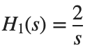
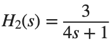
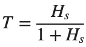

Transfer Function
실행 조건
MATLAB · Control System Toolbox
학습 목표
같은 계수라도 연결 방식이나 상쇄 조건에 따라 응답이 달라집니다. 계수에서 동작을 예측하는 연습입니다.
계수에서 Pole·Zero로
- num: 분자 다항식의 계수 배열.
- den: 분모 다항식의 계수 배열.
- 배열 순서: 차수가 높은 항부터.
시작 조건
- A: , .
- B: , .
- C: , .
진행 방법
- A를 기준 예제로 실행하세요. 분자·분모를 다항식으로 쓰고 roots와 pole/zero로 계산합니다.
- B와 C에도 같은 절차를 적용하세요. 분자·분모의 차수와 유한 Zero 개수를 구분하고, 복소근은 실수부·허수부를 함께 기록합니다.
- 세 모델의 Pole·Zero를 한 복소평면에 표시하세요. Pole은 ×, Zero는 ○로 구분하고 모델별 색을 달리합니다.
남길 결과
- 모델당 한 행인 표 1개와 Pole–Zero map 1개.
- A의 예시 수준: H(s)=2/(5s+1), Pole -0.2, 유한 Zero 없음. B·C는 직접 채웁니다.
- 계수와 근이 어떻게 연결되는지 간단히 설명합니다.
s=tf('s');
models={tf(2,[5 1]),tf([1 2],[1 3 2]),tf([1 1],[1 2 5])};
H_A=models{1}; disp(H_A); disp(pole(H_A)); disp(zero(H_A)); disp(dcgain(H_A));
% TODO: B, C의 표와 복소평면 그림을 완성하세요.
결과 기록·자가 점검
모델 | |
H(s) | |
Pole | |
유한 Zero | |
DC Gain |
확인할 점
- 계수로 직접 구한 근과 라이브러리 결과가 순서를 제외하고 일치하는가?
- DC Gain은 분모의 상수항이 0이 아닐 때 상수항의 비와 일치하는가?
직렬·병렬·Feedback 대조
시작 조건

,
. Feedback은 에 대한 음의 단위 Feedback입니다.진행 방법
- , ,

를 식으로 구하세요. - series, parallel, feedback로 같은 모델을 만들고, ω=[0.1,1,10] rad/s에서 직접 만든 식과 비교하세요.
- T의 Unit Step을 s에서 그리세요. Hs·Hp의 원점 Pole과 DC Gain의 의미를 구분합니다.
남길 결과
- 연결 3종의 계수 표 1개와 T의 Step plot 1개.
- 오차는 같은 주파수에서 복소 응답 차이의 절댓값으로 기록합니다.
s=tf('s'); H1=tf(2,[1 0]); H2=tf(3,[4 1]);
Hs=series(H1,H2); Hp=parallel(H1,H2); T=feedback(Hs,1); disp(Hs); disp(Hp); disp(T);
t=linspace(0,50,2501)'; figure; step(T,t); xlabel('Time [s]'); ylabel('Output'); grid on
% TODO: 직접 구한 Transfer Function과 같은 주파수에서 대조하세요.
결과 기록·자가 점검
연결 | |
직접 구한 분자 | |
직접 구한 분모 | |
최대 Frequency Response 오차 |
확인할 점
- 두 표현의 응답 차이가 1e-6 이하인가? 분모 최고차항 계수가 1이 되도록 모든 계수를 같은 값으로 나누어 비교했는가?
- Step plot에 시간[s]과 출력, 충분한 기록 구간이 표시되어 있는가?
상쇄와 작은 계수 변화
시작 조건
B의 분자 [1,2]를 [1,2.1]로 바꾼 모델 D를 만듭니다. 두 모델의 분모는 [1,3,2]입니다.
진행 방법
- B·D의 원래 Pole–Zero map과 minreal로 정리한 모델을 나란히 기록하세요.
- 동일한 Unit Step 입력에서 두 응답의 차이를 s에 그리세요.
- 완전 상쇄와 근접 상쇄를 구분하고, 상쇄 전 모델도 남겨야 하는 이유를 설명하세요.
남길 결과
- 모델 차수 표와 응답 차이 그래프 각 1개.
- 상쇄 판정에 사용한 허용오차와 해석 짧은 설명.
B=tf([1 2],[1 3 2]); D=tf([1 2.1],[1 3 2]); disp(minreal(B)); disp(minreal(D));
% TODO: 같은 시간축에서 B, D의 Unit Step과 두 응답의 차이를 그리세요.
결과 기록·자가 점검
모델 | |
원래 차수 | |
정리 후 차수 | |
최대 응답 차이 |
확인할 점
- D를 B와 똑같은 상쇄 모델로 단정하지 않았는가?
- 모델 표현의 차수와 실제 응답 차이를 구분했는가?